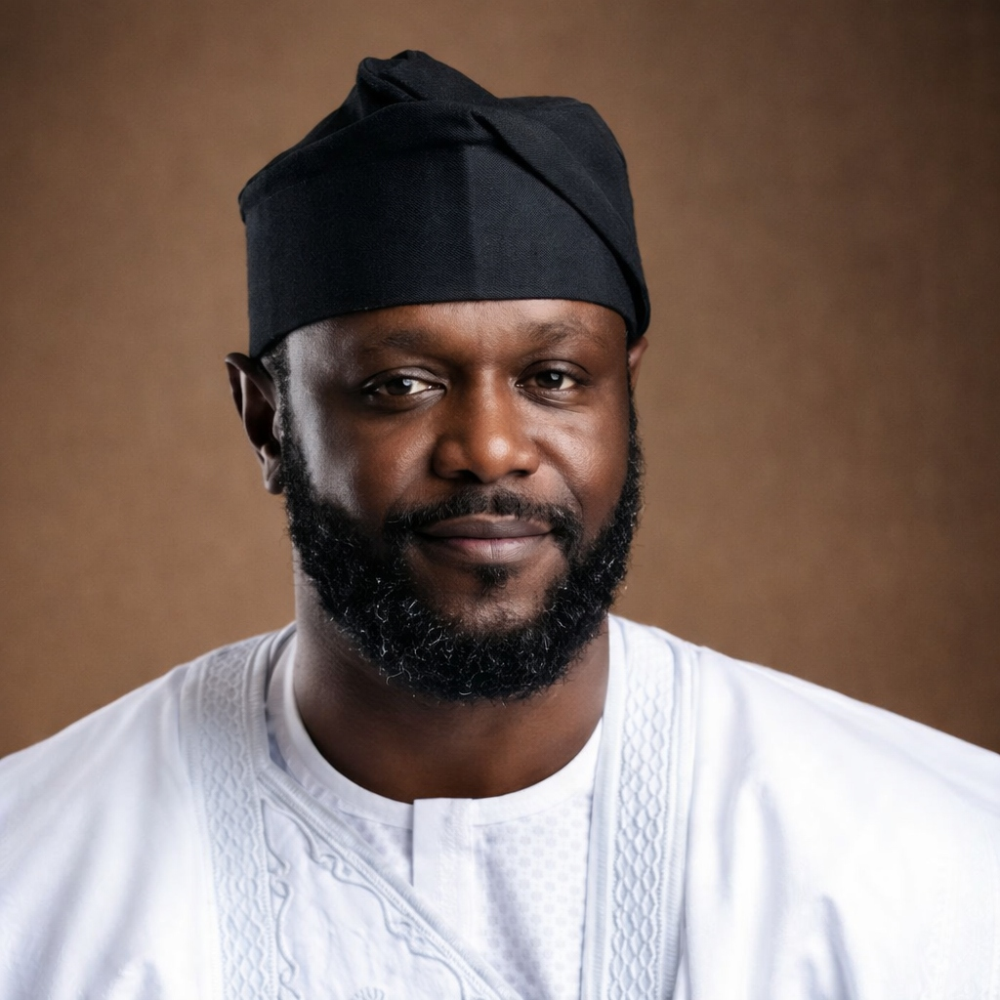

Seyi Tinubu — Entrepreneur, Philanthropist, and Champion of Youth Empowerment.
Leader of the Next Generation
Barr. Seyi Tinubu is a leading Nigerian entrepreneur, philanthropist, and the Patron of City Boy Movement. Born on October 13, 1985, into one of Nigeria's most influential political families, Seyi is the son of President Bola Ahmed Tinubu.
Growing up in a high-profile environment shaped his early exposure to leadership and governance, but he has carved out his own identity as a successful businessman and youth advocate, dedicated to national transformation through enterprise and service.
His educational journey spanned Nigeria, the UK, and the USA. He attended St. Saviour’s School, Milton Abbey, and earned a Bachelor of Laws from the University of Buckingham in 2010.
In 2013, he co-founded Loatsad Promomedia Limited, leading it to become a premier advertising powerhouse in Nigeria through innovation and strategic growth.
Seyi represents a new generation of leaders committed to transforming Nigeria through enterprise, advocacy, and social service.
Beyond business, Seyi founded the Noella Foundation, a philanthropic organization dedicated to empowering Nigerian youths. The foundation focuses on education, healthcare, and skill acquisition programmes specifically targeting underprivileged communities across the nation.
"Giving every young Nigerian the tools they need to build their own future is not just charity—it's a national investment."
Scholarships and literacy programs for the youth.
Vital medical interventions for remote communities.
Vocational training for self-reliance.
As Patron of City Boy Movement, Seyi Tinubu plays a pivotal role in youth mobilization and political advocacy. Established in 2022, the movement focuses on grassroots engagement and strategic support for President Tinubu’s administration.
The City Boy Movement was particularly instrumental in mobilizing young Nigerians during the 2023 elections, bridging the gap between governance and the aspirations of the youth.
"True leadership is about empowering others. We are building a movement that gives every young Nigerian a seat at the table."